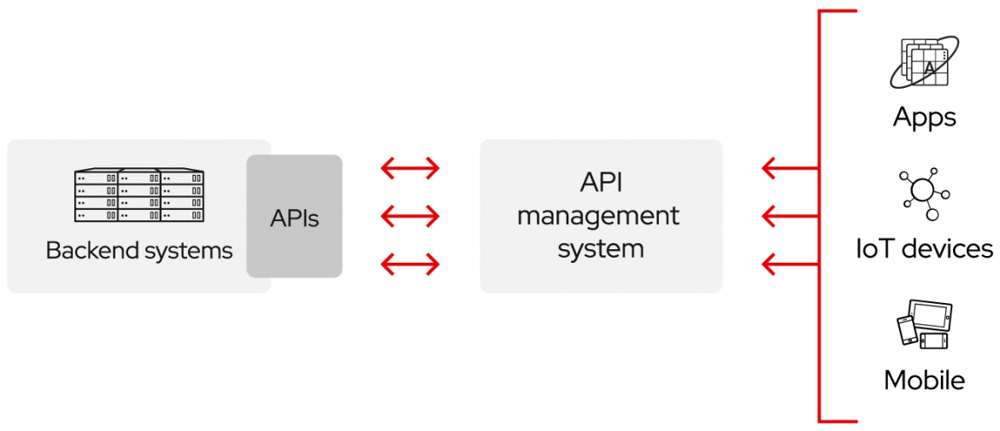

Présentation
Qu'est-ce que l'acronyme API ?
Le terme API est un acronyme qui signifie « Application Programming Interface ».
En français, une API se traduit par Interface de Programmation Applicative ou interface de programmation d'application (IPA donc, mais rien à voir avec la bière artisanale).
Définition d'une API
Un ensemble de fonctionnalités et de règles existant dans un logiciel permettant d'intéragir avec celui-ci de manière automatisée (plutôt que de passer par une interface utilisateur). L'API peut être vue comme un contrat simple passé entre le logiciel qui la propose et d'autres entités, telles que des logiciels ou matériels tiers.
En développement web, une API est généralement un ensemble de fonctionnalité (par exemple : méthodes, propriétés, évènements et URL) qu'un développeur peut utiliser dans son application pour les interactions avec les composants du navigateur de l'utilisateur, ou avec d'autres logiciels/matériels de l'ordinateur de l'utilisateur, ou avec des sites web et services tiers.
Application : Par application s’entend tout service avec lequel un développeur ou une autre application souhaite interagir. Cela peut être un service météorologique, une application de partage d’images, un portail Open Data.
Interface : L’interface est la porte d’entrée par laquelle il sera possible d’interagir avec l’application.
Programme : Le programme est une fonction informatique à laquelle un développeur donne des instructions et qui va interagir avec l’application à notre place. Le programme peut par exemple récupérer des données à intervalles régulières ou soumettre une adresse postale (pour récupérer une coordonnée géographique)…
À quoi sert l’API ?
L’API est un rouage central indispensable au fonctionnement et au développement du web et de nombreuses applications. Cette technologie agit en tant qu’intermédiaire entre deux systèmes informatiques indépendants afin qu’ils puissent échanger et exploiter les fonctionnalités d’une application et le contenu d’une base de données ou d’un système de fichiers.
L'histoire des API en quelques mots
Les API sont apparues à l'aube de l'informatique, avant même les ordinateurs personnels. À cette époque, elles étaient surtout utilisées en tant que bibliothèques pour les systèmes d'exploitation. Elles résidaient presque toutes en local sur les systèmes sur lesquels elles s'exécutaient, même si elles transféraient parfois des messages entre les mainframes. Presque 30 ans après, les API sont sorties de leurs environnements locaux. Au début des années 2000, elles sont devenues importantes pour l'intégration des données à distance.
Fonctionnement
Les API permettent à votre produit ou service de communiquer avec d'autres produits et services sans connaître les détails de leur mise en œuvre. Elles simplifient le développement d'applications et vous font ainsi gagner du temps et de l'argent. Lorsque vous concevez de nouveaux outils et produits, ou que vous assurez la gestion de ceux dont vous disposez déjà, les API vous offrent plus de flexibilité, simplifient la conception, l'administration et l'utilisation, et vous donnent les moyens d'innover. Les API sont parfois considérées comme des contrats, avec une documentation qui constitue un accord entre les parties : si la partie 1 envoie une requête à distance selon une structure particulière, le logiciel de la partie 2 devra répondre selon les conditions définies. Parce que les API simplifient la façon dont les développeurs intègrent de nouveaux composants d'applications dans une architecture existante, elles facilitent la collaboration entre les équipes informatiques et métier.
Souvent, les besoins des entreprises changent rapidement face à l'évolution constante des marchés numériques, où de nouveaux concurrents peuvent bouleverser tout un secteur avec une nouvelle application. Afin de conserver leur compétitivité, il est important pour ces entreprises de soutenir le développement et le déploiement rapides de services novateurs. Le développement d'applications cloud-native est un moyen évident d'augmenter la vitesse de développement. Il repose sur la connexion d'une architecture d'applications de type microservices via des API. Les API constituent un moyen simplifié de connecter votre propre infrastructure au travers du développement d'applications cloud-native. Elles vous permettent également de partager vos données avec vos clients et d'autres utilisateurs externes. Les API publiques offrent une valeur métier unique, car elles peuvent simplifier et développer vos relations avec vos partenaires, et éventuellement monétiser vos données (l'API Google Maps en est un parfait exemple). L’interface de programmation d’application est un moyen de communication entre un utilisateur et un fournisseur. Elle permet de faire dialoguer différents logiciels et applications grâce à un système de transmission de requêtes et de réponses. En bref, avec les API, vous ouvrez l'accès à vos ressources, sans sacrifier le contrôle et la sécurité. Après, c'est vous qui choisissez les ressources que vous souhaitez partager, et avec qui. La sécurité des API est essentiellement une question de bonne gestion de celles-ci, ce qui implique l'utilisation d'une passerelle d'API. La connexion des API et la création des applications qui utilisent les données ou les fonctionnalités exposées par les API peuvent se faire par l'intermédiaire d'une plateforme d'intégration distribuée qui connecte tout, y compris les systèmes existants et l'Internet des objets (IoT).
Mode d’intervention de l’API
L’interface de programmation d’application autorise l’utilisateur à accéder aux données d’une application à distance. Il doit pour cela envoyer une requête au logiciel du fournisseur concerné via l’API. Cette requête, envoyée sous la forme d’un langage universel, permet au logiciel de la réceptionner et de l’analyser pour y répondre. L’API s’interpose entre l’émetteur de la demande et le fournisseur des contenus, lie et encadre l’exécution d’actions entre les deux parties à la manière d’un contrat d’interface.
Des protocoles de communication uniformisés
Pour permettre à l’utilisateur de transmettre une requête intelligible et compréhensible à un logiciel doté d’un environnement potentiellement différent, les API s’appuient principalement sur deux protocoles de communication définis. En effet, l’API doit pouvoir fournir une demande standardisée et compatible aux différentes plateformes d’application telles qu’Android, Apple ou Windows. Il peut s’agir du SOAP, sigle de « Simple Object Access Protocol » ou du REST (Representational State Transfer). Le SOAP est un protocole qui émet des requêtes formulées au langage XML et reçoit les messages via HTTP ou SMTP. Cependant, l’API REST, également appelée RESTful, est aujourd’hui le protocole le plus utilisé en raison de sa plus grande flexibilité. Il se distingue du SOAP par sa nature même : le REST est un style d’architecture et non un protocole, qui n’est pas régi par une norme clairement établie. Toutefois, le REST doit répondre à un cahier des charges et respecter un certain nombre de paramètres concernant notamment : l’architecture client-serveur; l’exigence d’un serveur stateless; la mise en mémoire. Il doit aussi donner accès à une interface uniforme pour permettre l’identification des ressources dans les requêtes, la manipulation des ressources par les utilisateurs et l’envoi de messages décrivant la manière dont l’utilisateur doit traiter les informations. Depuis 2015, le langage de requête GraphQL propose un environnement d’exécution alternatif aux API REST pour les serveurs. Il se distingue en offrant un accès plus personnalisé aux utilisateurs. Ils peuvent accéder aux données dont ils ont effectivement besoin, en créant des requêtes qui extraient les informations issues de plusieurs sources grâce à une unique requête d’API.
Les différents types d’API
Les API sont classées à la fois en fonction de leur architecture et de leur champ d'utilisation. Nous avons déjà exploré les principaux types d'architectures d'API, passons donc au champ d'application.
| API privées | API partenaires | API publiques | API composites |
|---|---|---|---|
| L'API n'est utilisable qu'en interne. Cette approche permet de garder un contrôle total sur l'API. L’API interne, privée ou Private API, accessible uniquement en interne et conçue pour les besoins spécifiques d’une entreprise souhaitant en garder le contrôle total. Elles sont internes à une entreprise et ne servent qu'à connecter des systèmes et des données au sein de l'entreprise. | L'API est partagée avec certains partenaires de l'entreprise. Cette approche peut générer de nouveaux flux de revenus sans compromettre la sécurité. L’API partenaire, qui exige une clé d’identification fournie par un service d’authentification et d’autorisation. Elles ne sont accessibles qu'aux développeurs externes autorisés afin de faciliter les partenariats interentreprises. | L'API est accessible à tous. Cette approche autorise les tiers à développer des applications qui interagissent avec votre API et peut devenir source d'innovations. L’API ouverte ou Open API, accessible publiquement sans restriction. Elles sont ouvertes au public et peuvent être utilisées par tous. Il peut y avoir ou non une autorisation et un coût associés à ces types d'API. | Celles combinent deux API différentes ou plus pour faire face aux exigences ou aux comportements complexes du système. |
Une API peut être consultable par tous, sans authentification, on parle alors d’une API publique. C’est notamment le cas des API géographiques du gouvernement français. Par exemple, l’API de geo.api.gouv.fr permet d’obtenir publiquement des informations sur les communes de France, simplement en consultant une url : curl 'https://geo.api.gouv.fr/communes?codePostal=78000' Mais une API peut être consultable à condition de s’authentifier, grâce à une clé ou un jeton d’authentification (JSON Web Token). Dans ce cas, on parle d’API privée. Enfin, les API peuvent se différencier par leurs approches : les API SOAP (Simple Object Access Protocol) : cette approche est de moins en moins utilisée, les API REST (Representational State Transfert) : il s’agit de l’architecture la plus utilisée aujourd’hui, les API GraphQL, ce nouveau style d’architecture d’API développé par Facebook propose une alternative à REST.
Pour standardiser l'échange des informations entre les API toujours plus nombreuses, il a fallu développer un protocole : le « Simple Object Access Protocol », plus connu sous le nom de SOAP. Les API conçues d'après le protocole SOAP utilisent le format XML pour leurs messages et reçoivent des requêtes via HTTP ou SMTP. SOAP a pour objectif de simplifier l'échange des informations entre les applications qui s'exécutent dans des environnements différents ou qui ont été écrites dans des langages différents. Le « Representational State Transfer », ou REST, est une autre tentative de normalisation. Les API web qui respectent les contraintes de l'architecture REST sont appelées API RESTful (pour en savoir plus sur SOAP ou REST). Ces deux éléments diffèrent sur un point fondamental : SOAP est un protocole, alors que REST est un style d'architecture. Cela signifie qu'il n'existe aucune norme officielle qui régit les API web RESTful.
Selon la définition proposée par Roy Fielding dans sa thèse « Architectural Styles and the Design of Network-based Software Architectures », les API sont RESTful tant qu'elles respectent les six contraintes de conception d'un système RESTful :
- Architecture client-serveur : une architecture REST est composée de clients, de serveurs et de ressources et elle traite les requêtes via le protocole HTTP.
- Serveur stateless : le contenu du client n'est jamais stocké sur le serveur entre les requêtes. Les informations sur l'état de la session sont, quant à elles, stockées sur le client.
- Mémoire cache : la mise en mémoire cache permet de se passer de certaines interactions entre le client et le serveur.
- Système à couches : des couches supplémentaires peuvent assurer la médiation dans les interactions entre le client et le serveur. Ces couches peuvent remplir des fonctions supplémentaires, telles que l'équilibrage de charge, le partage des caches ou la sécurité.
- Code à la demande (facultatif) : un serveur peut étendre les fonctionnalités d'un client en lui transférant du code exécutable.
- Interface uniforme : cette contrainte est capitale pour la conception des API RESTful et couvre quatre aspects différents : Identification des ressources dans les requêtes : les ressources sont identifiées dans les requêtes et sont séparées des représentations retournées au client.
- Manipulation des ressources par des représentations : les clients reçoivent des fichiers qui représentent les ressources. Ces représentations doivent contenir suffisamment d'informations pour être modifiées ou supprimées.
- Messages autodescriptifs : tous les messages renvoyés au client contiennent assez d'informations pour décrire la manière dont celui-ci doit traiter les informations.
- Hypermédia comme moteur du changement des états applicatifs : après avoir accédé à une ressource, le client REST doit être en mesure de découvrir toutes les autres actions disponibles par des hyperliens.
Ces contraintes peuvent sembler difficiles à appliquer, mais dans les faits, elles le sont moins qu'un protocole. C'est pour cette raison que les API RESTful prennent progressivement le pas sur les API SOAP. Ces dernières années, la spécification OpenAPI s'est imposée comme la norme commune pour définir les API REST. La norme OpenAPI permet aux développeurs de créer des interfaces d'API REST indépendantes du langage de manière à ce que les utilisateurs puissent les comprendre avec un minimum d'approximation. Une autre norme d'API est en train d'émerger : GraphQL, un langage de requête et un environnement d'exécution côté serveur qui se propose de remplacer l'architecture REST. GraphQL s'attache à fournir aux clients uniquement les données qu'ils ont demandées, et rien de plus. Utilisé à la place de REST, GraphQL permet aux développeurs de créer des requêtes qui extraient les données de plusieurs sources à l'aide d'un seul appel d'API.
Exemples
Les APIs sont partout et servent à une foule de choses. Des prévisions météorologiques sur votre smartphone à Netflix, tout repose sur des APIs. Ce qui vous permet, ainsi qu’à vos voisins, de regarder votre application météo le matin, ce sont les APIs. Un fournisseur de données météo fait des prédictions et partage ses données en temps réel à des développeurs en un flux continu. Pour briller en soirée, je vous donne le terme technique : on parle d’exposer les données. Les développeurs peuvent ainsi construire une application autour de ce flux de données.
Vous sortez de soirée et souhaitez prendre un vélo en libre service ? Idem ! L’opérateur relève chaque seconde la disponibilité de tous ses vélos et expose ses données via une API. Ces données temps-réel sont partagées simultanément à toutes les applications construites autour de cette API. Pratique ! Lorsque vous regardez Netflix, le service de vidéos mesure la qualité de votre connexion internet et adapte automatiquement la qualité de ses vidéos en conséquence. Vous vous tenez à côté du boîtier de votre fournisseur ? La définition de l’image est parfaite. Vous marchez jusqu’à la cuisine en tenant votre ordinateur d’une main pour mettre une pizza au four (ne faites pas ça, c’est dangereux)? Netflix vous propose une image moins nette (et donc un flux de données moins important) pour ne pas interrompre le visionnage de votre série. L'API permet aux développeurs d'utiliser un programme sans avoir à se soucier de son fonctionnement. Les API peuvent par exemple être utilisées pour déclencher des campagnes publicitaires en ligne en évitant de passer par la compréhension du processus technique sous-jacent. C'est le cas avec l'API AdWords de Google notamment. On retrouve les API dans de nombreux logiciels, en particulier dans les systèmes d'exploitation (Windows, Linux, Mac OS), les serveurs d'applications (Apache), dans les outils graphiques (OpenGL), dans les applications SaaS (Office 365, G Suite, Salesforce...), dans les bases de données, l'open data, etc. Sur le Web, elles sont typiquement utilisées pour intégrer à un site des services tiers (par exemple Google Maps et Facebook).
Autre exemple : les plateformes de réservation de billets d'avion y ont recours pour interroger l'offre disponible au sein des systèmes des différentes compagnies aériennes. L'API getUserMedia peut être utilisée pour capturer l'audio et la vidéo de la webcam d'un utilisateur, pour ensuite en faire ce que le développeur souhaite comme par exemple les enregistrer, les diffuser à un autre utilisateur lors d'une conférence téléphonique ou capturer des clichés à partir de la vidéo. L'API Geolocation peut être utilisée pour récupérer des informations de localisation à partir de n'importe quel service disponible sur les appareils d'un utilisateur (GPS par exemple), qui peuvent ensuite être utilisées conjointement avec l'API Google Maps pour par exemple tracer la position géographique de l'utilisateur sur une carte personnalisée et lui montrer les attractions touristiques proches de lui. L'API Twitter peut être utilisée pour récupérer les données d'un compte utilisateur Twitter, par exemple pour afficher ses derniers tweets sur une page web. L'API Web Animations peut être utilisée pour animer des parties d'une page web, par exemple pour faire bouger ou pivoter des images.
Cas concret 1
Lorsque vous utilisez une application sur votre téléphone portable, l'application se connecte à Internet et envoie des données à un serveur. Le serveur récupère ensuite ces données, les interprète, effectue les actions nécessaires et renvoie les données à votre téléphone. L'application interprète alors ces données et vous présente les informations demandées de façon lisible. C'est à cela que sert une API : l'ensemble du processus passe par elle. Imaginez que vous êtes assis à la table d'un restaurant, avec le menu des plats disponibles. La cuisine représente la partie du « système » qui va préparer votre commande. Cependant, il manque le lien essentiel qui permet de communiquer votre commande à la cuisine et de servir votre repas à votre table. C'est à ce moment-là que la serveuse ou l'API intervient. La serveuse (l'API) est le messager qui prend votre commande (votre demande) et indique à la cuisine (au système) ce qu'il faut faire. Ensuite, la serveuse vous apporte la réponse (en l'occurrence, votre plat).
Cas concret 2
Imaginez, par exemple, un distributeur de livres. Ce distributeur pourrait fournir à ses librairies clientes une application cloud qui leur permettrait de vérifier la disponibilité des livres auprès du fournisseur. Toutefois, le développement de cette application risque d'être coûteux et de prendre du temps, alors que l'application finale risque d'être limitée par la plateforme et de nécessiter une maintenance continue. Le distributeur peut aussi fournir une API pour vérifier la disponibilité des stocks. Cette approche présente plusieurs avantages : en accédant aux données via une API, les clients ont la possibilité de centraliser les informations sur leur inventaire; le distributeur peut modifier ses systèmes internes sans impacter l'expérience de ses clients, tant que le comportement de son API ne change pas; avec une API publique, les développeurs qui travaillent pour le distributeur, pour les librairies ou pour d'autres entreprises peuvent développer une application qui aide les clients à trouver les livres qu'ils souhaitent acheter. Ainsi, les distributeurs peuvent augmenter leurs ventes ou saisir de nouvelles opportunités commerciales.
En bonus, voici un lien intéressant, cliquez dessus: